Panduan ini untuk tim toko yang memakai aplikasi OmegaSinarTerang setiap hari. Anda sudah mengenal usaha Anda dan sudah terbiasa dengan sistem lama (Affari). Panduan ini menjelaskan di mana letak setiap pekerjaan di aplikasi baru, tombol mana yang ditekan, dan apa yang terjadi sesudahnya.
Anda tidak perlu paham akuntansi. Jurnal, buku besar, dan harga pokok dihitung otomatis oleh aplikasi di belakang layar setiap kali Anda menyimpan transaksi.
Cara membaca panduan ini:
Setiap orang masuk dengan akun sendiri. Menu yang tampil di sisi kiri layar menyesuaikan perannya.
| Peran | Tugas utama |
|---|---|
| Operator | Memasukkan semua transaksi harian: order, faktur penjualan & pembelian, surat jalan, retur, mutasi gudang, penerimaan & pengeluaran kas, biaya operasional. Mencetak nota. Memperbaiki faktur yang ditandai bermasalah. |
| Supervisor | Sore hari mengecek faktur dan bukti kas yang dibuat hari itu (Pengecekan Invoice). Menyetujui atau menolak permintaan dari Operator (Antrian Persetujuan). Mencatat hitungan stok opname. Membaca laporan. Supervisor tidak pernah mengubah faktur. |
| Master | Pemilik/administrator. Bisa melakukan semua yang dilakukan Operator dan Supervisor, ditambah Bagan Akun, Jurnal, Saldo Awal, Pengaturan, Pengguna (akun & password), dan memposting stok opname. |
| Grup menu | Isi | Operator | Supervisor | Master |
|---|---|---|---|---|
| (tanpa judul) | Dashboard | ✓ | — | ✓ |
| MASTER DATA | Produk, Merek, Satuan, Pelanggan, Supplier, Salesman, Gudang, Kendaraan, Pekerja | ✓ | — | ✓ |
| TRANSAKSI | Order Penjualan, Faktur Penjualan, Retur Penjualan, Surat Jalan, Mutasi Gudang, Faktur Pembelian, Retur Pembelian | ✓ | — | ✓ |
| KAS & BANK | Penerimaan Kas, Pengeluaran Kas, Biaya Operasional, Pindah Buku Kas, Pelunasan Kasbon | ✓ | — | ✓ |
| AKUNTANSI | Bagan Akun, Jurnal, Saldo Awal | — | — | ✓ |
| PENGECEKAN | Pengecekan Invoice, Antrian Persetujuan | — | ✓ | ✓ |
| LAPORAN | Laporan | ✓ (kecuali Stok Opname) | ✓ | ✓ |
| PENGATURAN | Pengaturan, Pengguna | — | — | ✓ |
Tujuan: masuk ke aplikasi dengan akun Anda sendiri.
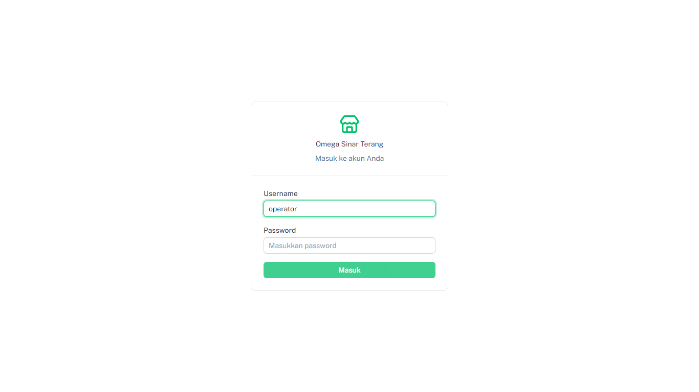
Operator dan Master langsung masuk ke Dashboard. Supervisor langsung masuk ke halaman Pengecekan Invoice Harian (Supervisor tidak punya Dashboard).
Untuk keluar: klik nama Anda di pojok kanan atas, lalu pilih Keluar.
Satu komputer dipakai bergantian. Selalu keluar sebelum orang lain memakai komputer, supaya transaksi tercatat atas nama orang yang benar. Kalau muncul Username atau password salah., periksa huruf besar/kecil. Lupa password? Minta Master me-reset-nya di Pengaturan → Pengguna (lihat 7.3).
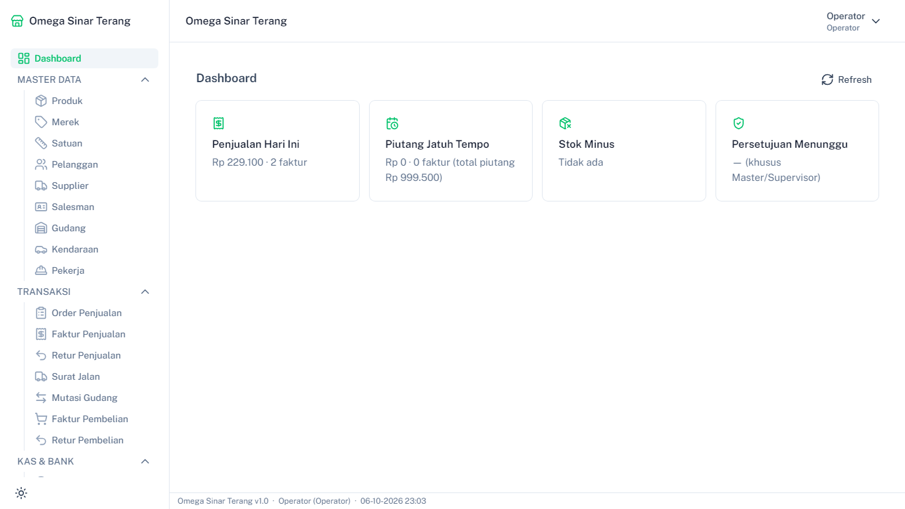
| Kartu | Isinya |
|---|---|
| Penjualan Hari Ini | Total rupiah dan jumlah faktur penjualan hari ini. |
| Piutang Jatuh Tempo | Nilai dan jumlah faktur yang sudah lewat jatuh tempo, ditambah total seluruh piutang. |
| Stok Minus | Jumlah produk yang stoknya minus di gudang Toko (Tidak ada bila aman). |
| Persetujuan Menunggu | Jumlah permintaan yang menunggu (hanya tampil angkanya untuk Master). |
Klik Refresh di kanan atas untuk memperbarui angka. Klik kartunya untuk membuka laporan terkait.
Hampir semua menu dibuka dalam bentuk daftar (tabel). Polanya selalu sama:
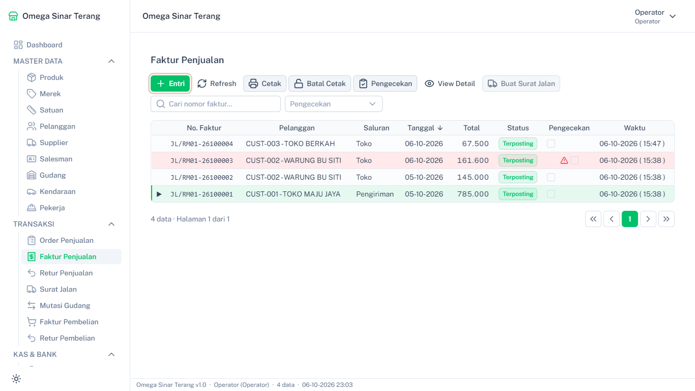
| Bagian | Gunanya |
|---|---|
| Baris tombol (toolbar) | Entri membuat dokumen baru. Refresh memuat ulang. View Detail, Cetak, Batal Cetak, Pengecekan membuka halaman detail dokumen yang sedang dipilih. Tombol yang tersedia berbeda-beda per menu. |
| Kotak Cari… | Ketik nomor dokumen (atau nama, untuk master data). Hasil menyaring sendiri. |
| Saringan (filter) | Kotak pilihan di samping Cari, misalnya Pengecekan atau Status Kirim. Klik tanda × di sampingnya untuk menghapus saringan. |
| Judul kolom | Klik untuk mengurutkan; klik lagi untuk membalik urutan. |
| Memilih baris | Klik satu baris. Tanda ▶ muncul di kiri baris yang terpilih. Tombol seperti View Detail baru aktif setelah ada baris terpilih. |
| Bawah tabel | Jumlah data dan nomor halaman. |
Di menu MASTER DATA, setiap baris juga punya tombol titik tiga (⋮) berisi Ubah, Nonaktifkan, atau Aktifkan.
Dokumen yang punya banyak baris barang (faktur, order, retur, mutasi) diisi lewat dua jendela bertumpuk:
Setiap jendela punya tombol Simpan dan Keluar. Menyimpan baris hanya memasukkan baris ke tabel; dokumen baru benar-benar tersimpan setelah Anda klik Simpan di jendela dokumen.
Selama jendela dokumen terbuka dan sudah ada yang diketik, aplikasi menyimpan isian Anda sebagai draf di browser. Kalau halaman tidak sengaja ter-refresh, buka lagi menu yang sama dan klik Entri: isian terakhir muncul kembali.
| Tombol | Fungsi | Berlaku di |
|---|---|---|
| / | Pindah ke kotak Cari… | Halaman daftar (saat tidak ada jendela terbuka) |
| Insert | Buka jendela baris baru | Jendela dokumen Faktur Penjualan, Order Penjualan, Faktur Pembelian, Mutasi Gudang, Biaya Operasional |
| F2 | Ubah baris yang sedang dipilih | |
| Delete | Hapus baris yang dipilih (ada konfirmasi) | |
| Enter | Pindah ke kotak berikutnya. Di kotak terakhir: simpan baris — pada lima layar di atas sekaligus membuka baris baru. | Jendela baris; tabel konversi satuan (form Produk) dan tabel Saldo Awal |
| Ctrl + S | Simpan | Jendela dokumen, jendela baris, form master data |
| Esc | Tutup satu jendela (paling atas). Kalau ada isian belum disimpan, Anda ditanya dulu. | Semua jendela |
| Tab | Mencari faktur dari nomor yang baru diketik | Kotak Faktur Asal di Retur Penjualan |
Tombol keyboard hanya bekerja di jendela paling atas: saat jendela baris terbuka, Insert/F2/Delete milik jendela dokumen di bawahnya diam.
Insert → ketik produk → Enter → satuan → Enter → harga → Enter → qty → Enter (baris tersimpan, baris baru terbuka) … Esc setelah baris terakhir → Ctrl+S untuk menyimpan dokumen.
Pintasan lama Ctrl+H dan Ctrl+D dari sistem lama sudah tidak dipakai: kolom harga langsung bisa diketik dan diskon penjualan sudah ditiadakan.
1500000, tampil 1.500.000).Bab ini pendek tapi paling penting. Bacalah sebelum memakai menu transaksi.
Nomor dokumen dibuat otomatis oleh aplikasi dengan bentuk KODE/RM01-YYMMXXXX. Contoh: JL/RM01-26100001 = faktur penjualan, toko RM01, tahun 26, bulan 10 (Oktober), urutan ke-0001.
| Kode | Dokumen | Kode | Dokumen |
|---|---|---|---|
| SO | Order Penjualan (Sales Order) | RB | Retur Pembelian |
| JL | Faktur Penjualan | GD | Mutasi Gudang |
| SJ | Surat Jalan | PAY | Penerimaan/Pengeluaran Kas |
| RJ | Retur Penjualan | KK | Biaya Operasional (Bukti Kas Keluar) |
| B1 | Faktur Pembelian | PB | Pindah Buku Kas |
| PK | Pelunasan Kasbon | OP | Stok Opname |
Di halaman detail dokumen, Anda akan melihat sampai tiga “lencana” status. Ketiganya berdiri sendiri-sendiri:
| Status | Nilai yang mungkin | Artinya |
|---|---|---|
| Posting | Terposting → Dibatalkan | Terposting = dokumen berlaku. Dibatalkan = sudah di-VOID; angkanya sudah dibalik oleh sistem, dokumen tetap tersimpan untuk arsip. |
| Cetak | Belum Dicetak → Sudah Dicetak → Cetak Dibatalkan | Sudah Dicetak = nota sudah keluar ke pelanggan/sopir, dokumen terkunci. Cetak Dibatalkan = kunci sudah dibuka (lewat Batal Cetak yang disetujui). |
| Pengecekan | Belum Dicek → Disetujui / Bermasalah | Hasil pengecekan Supervisor. Bermasalah = ada yang perlu diperbaiki Operator; catatannya tampil merah di halaman detail. |
Di daftar, status cetak sering ditampilkan sebagai kotak centang di kolom P, dan status pengecekan di kolom Pengecekan (centang = Disetujui, tanda segitiga merah = Bermasalah; arahkan mouse ke tanda itu untuk membaca catatan Supervisor).
Begitu nota dicetak dan diserahkan, isinya tidak boleh berubah diam-diam. Karena itu:
Langkah lengkapnya ada di 5.8.
Beberapa tindakan tidak bisa langsung jalan; aplikasi meminta persetujuan dulu:
| Tindakan | Kapan muncul | Label di Antrian Persetujuan |
|---|---|---|
| Membatalkan (VOID) dokumen | Operator mem-VOID dokumen apa pun: faktur, retur, surat jalan, pembayaran, baris biaya operasional, pindah buku kas, pelunasan kasbon | VOID Dokumen |
| Membuka kunci cetak | Dokumen sudah dicetak lalu Anda klik Batal Cetak (semua peran, termasuk Master) | Batal Cetak |
| Menjual di bawah harga pokok | Ada baris faktur yang harganya di bawah harga pokok (satu permintaan per faktur) | Jual di Bawah Harga Pokok |
| Pengeluaran kas besar | Uang keluar dari Kas Besar atau rekening bank melewati batas yang diatur Master | Pengeluaran Kas |
| Barang Rusak kembali ke Toko | Mutasi dari gudang Barang Rusak ke gudang Toko (barang jadi bisa dijual lagi) | Mutasi Bad Stock ke Toko |
Yang terjadi di layar Operator:
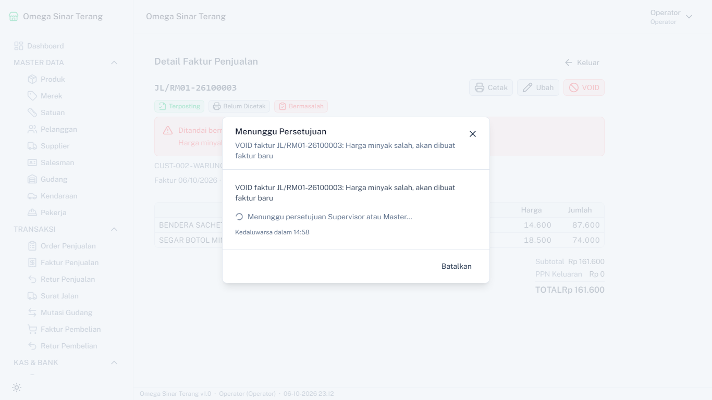
Ada dua cara memperbaiki faktur yang salah:
| Revisi (tombol Ubah) | VOID + faktur baru | |
|---|---|---|
| Nomor faktur | Tetap sama; di bawah nomor muncul Revisi 1, Revisi 2, dst. | Faktur lama berstatus Dibatalkan; faktur baru mendapat nomor baru. |
| Kapan bisa | Faktur Penjualan, Faktur Pembelian, Retur Penjualan, dan Retur Pembelian yang tanggalnya masih di dalam batas mundur tanggal (standar: 2 hari), dengan syarat: faktur penjualan belum punya Surat Jalan/Retur; barang faktur pembelian belum terjual; barang retur penjualan belum keluar dari gudang Barang Rusak. Pelanggan/faktur asal retur dan supplier retur tidak bisa diganti. | Kapan saja. |
| Cocok untuk | Salah harga, salah pelanggan, salah qty yang ketahuan cepat. | Kesalahan yang ketahuan setelah lewat batas, atau dokumen yang memang batal. |
Kalau Anda mencoba merevisi faktur yang sudah lewat batas, muncul pesan Faktur berumur lebih dari 2 hari tidak bisa direvisi. Gunakan VOID lalu terbitkan faktur baru. Ini bukan kerusakan. Klik tombol Batalkan (VOID) yang muncul di bawah pesan itu, lalu buat faktur baru dengan isi yang benar.
Aplikasi tidak menolak penjualan walau stok di sistem tidak cukup — barang fisik kadang sudah ada sebelum faktur pembeliannya diketik. Jendela baris Order Penjualan dan Faktur Penjualan menampilkan peringatan kuning Qty melebihi sisa stok (sisa …). Boleh dilanjutkan; transaksi tetap bisa disimpan. Setelah faktur tersimpan, muncul pemberitahuan Faktur tersimpan — stok minus berisi produk yang stoknya jadi minus. Pastikan faktur pembelian yang tertinggal segera dimasukkan.
Setiap produk punya satu satuan dasar (satuan terkecil, misalnya sachet atau botol) dan boleh punya satuan yang lebih besar (renceng, dus). Stok disimpan dalam satuan dasar dan ditampilkan dalam pecahan, misalnya “12 dus 15 renceng”. Kata seperti “gr”, “ml”, atau “liter” di nama produk hanya bagian dari nama, bukan satuan hitung.
Di semua layar — termasuk Mutasi Gudang dan Saldo Awal — qty diisi dengan angka + pilihan satuan. Pilihan satuan menampilkan isinya, misalnya dus (isi 60); aplikasi sendiri yang mengubahnya ke satuan dasar.
Menu MASTER DATA dipakai Operator dan Master. Semua halamannya punya tombol yang sama: Entri, Ubah, Refresh, Hapus. Form isian membuka sebagai jendela dengan tombol Simpan dan (untuk data baru) Simpan & Tambah Lagi.
Data master tidak pernah benar-benar dihapus, karena sudah tercetak di nota lama. Hapus dan Nonaktifkan sama-sama membuat data berstatus Nonaktif: tidak muncul lagi di pilihan transaksi baru, tapi tetap ada di dokumen lama. Data nonaktif bisa diaktifkan lagi lewat menu ⋮ → Aktifkan.
Kolom Kode di Merek, Satuan, Salesman, Kendaraan, dan Produk diisi otomatis saat disimpan. Kalau ingin mengetik sendiri, nyalakan sakelar Isi kode manual.
Tujuan: mendaftarkan barang baru beserta satuan jual/belinya.
sachet.dus Isi 6 (renceng); baris 2 renceng Isi 10 (sachet). Klik Tambah baris untuk menambah.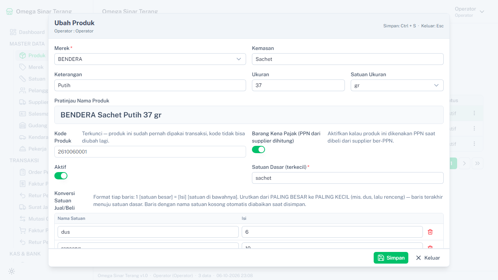
Keempatnya cukup diisi nama (Kode otomatis). Pilih Aktif untuk yang masih dipakai.
D 1234 AB - PICK UP.Isi Nama Pelanggan, Kode (kosongkan untuk otomatis, atau klik Bangkitkan), No. Telepon, PKP (Pengusaha Kena Pajak), Alamat Lengkap, Kecamatan, Kota, Provinsi. Termin pembayaran tidak disimpan di sini — termin diisi per faktur.
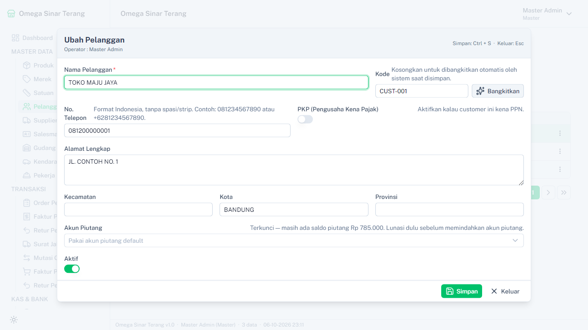
Kotak Akun Piutang hanya terlihat oleh Master. Kosongkan untuk memakai akun piutang usaha standar. Kotak ini terkunci selama pelanggan masih punya saldo piutang.
Pelanggan baru juga bisa ditambahkan langsung dari layar Faktur Penjualan dengan tombol Baru di samping kotak Pelanggan (lihat 5.2).
Isi Nama Supplier, No. Telepon, PKP (Pengusaha Kena Pajak), Alamat. Kode (SUP-001, dst.) dibuat otomatis dan tidak bisa diubah. Status PKP menentukan apakah PPN masukan dihitung di faktur pembelian.
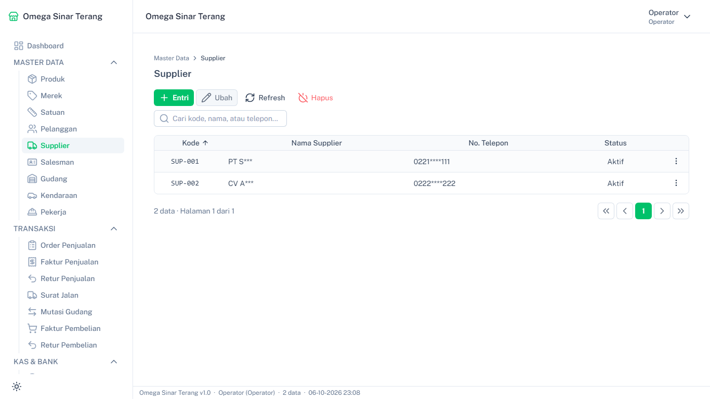
Untuk Operator, nama, telepon, dan alamat supplier ditampilkan tersamar (misalnya PT S***). Ini disengaja. Pilih supplier berdasarkan Kode-nya (SUP-001, SUP-002, …). Master melihat nama lengkap.
Ada tiga tipe gudang:
| Tipe Gudang | Artinya |
|---|---|
| Gudang Toko | Stok normal yang dijual. Semua faktur pembelian masuk ke sini. |
| Barang Rusak | Barang rusak/tidak layak jual dan barang retur dari pelanggan. Tidak dijual lagi, tapi bisa diretur ke supplier. |
| Barang Titipan Pelanggan | Barang yang sudah dibeli dan dibayar pelanggan tetapi belum diambil (lihat 5.8). |
Nyalakan Gudang Default (untuk tipe ini) pada satu gudang per tipe. Biasanya data gudang hanya diatur sekali saat aplikasi mulai dipakai.
Kalau muncul pesan Gudang STORE aktif tidak ditemukan saat menyimpan faktur, berarti gudang Toko tidak aktif atau terhapus. Minta Master memeriksa menu Gudang.
Daftar karyawan tetap (tukang angkut, dll.) yang dipilih di baris Upah Tukang Angkut dan Kasbon pada Biaya Operasional, serta di Pelunasan Kasbon. Isi Nama Pekerja; Kode otomatis. Pekerja yang sudah berhenti cukup dinonaktifkan.
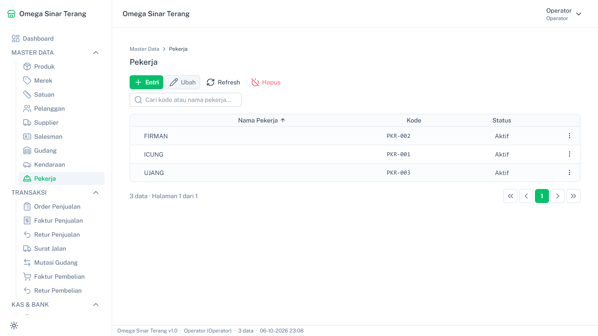
Bab ini disusun per kejadian di toko, bukan per menu.
Tujuan: mencatat pesanan pelanggan yang akan diantar sopir/salesman, sampai nota dan surat jalan tercetak.
Untuk saluran Pengiriman, Order Penjualan (SO) wajib ada lebih dulu.
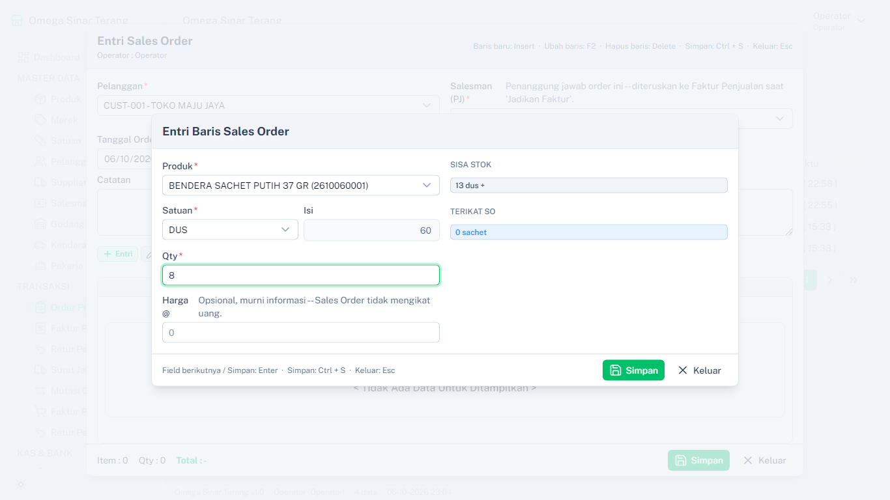
Status order menjadi Dibatalkan. Order itu tidak bisa diubah atau dijadikan faktur lagi, dan tidak muncul lagi di pilihan Sales Order.
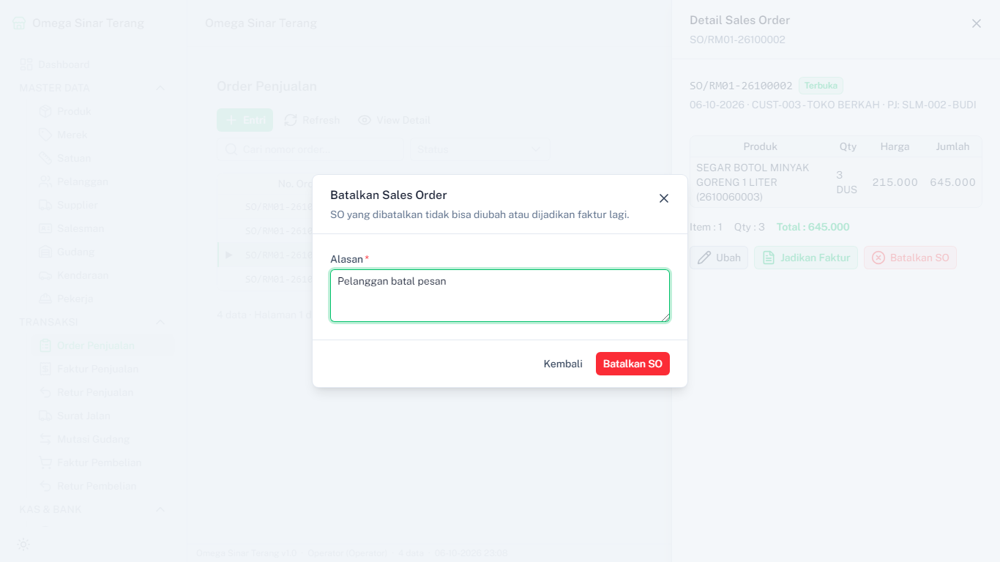
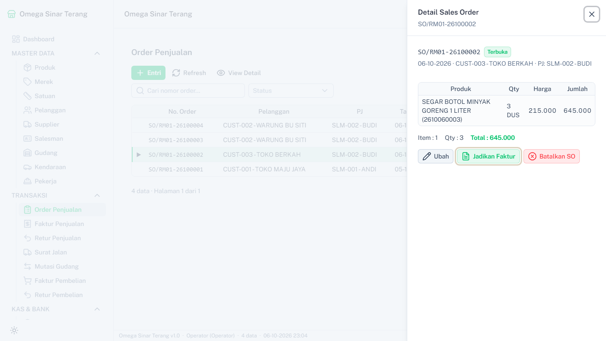
Jendela Entri Faktur Penjualan terbuka dengan Saluran = Pengiriman, pelanggan, Sales Order, salesman, dan semua baris sudah terisi dari order.
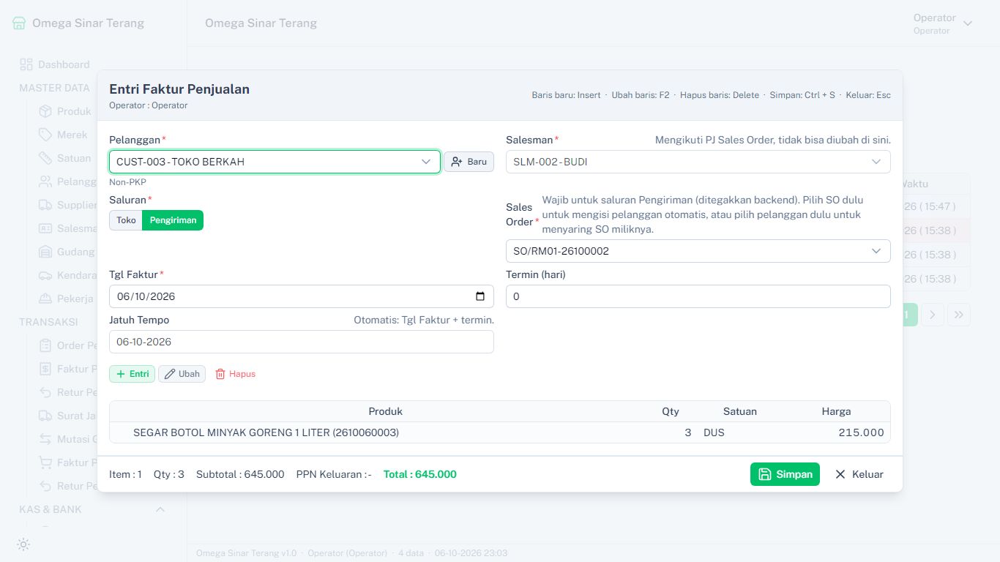
Faktur Pengiriman juga bisa dibuat dari menu Faktur Penjualan → Entri → pilih Pengiriman → pilih Sales Order dari daftar. Pelanggan dan baris terisi otomatis. Atau pilih pelanggan dulu untuk menyaring order miliknya saja.
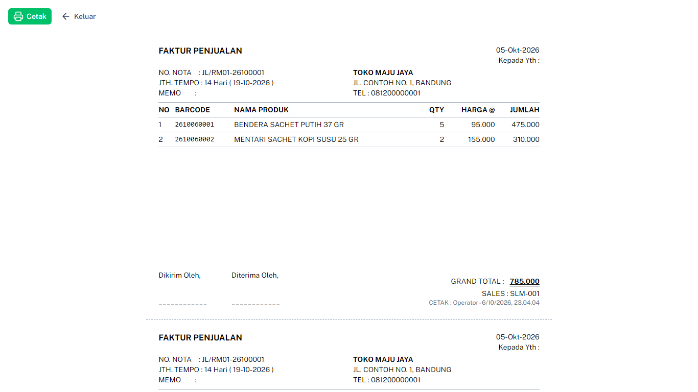
Status cetak berubah menjadi Sudah Dicetak, dan faktur terkunci. Nota memuat maksimal 14 baris per halaman; lebih dari itu berlanjut ke halaman berikutnya.
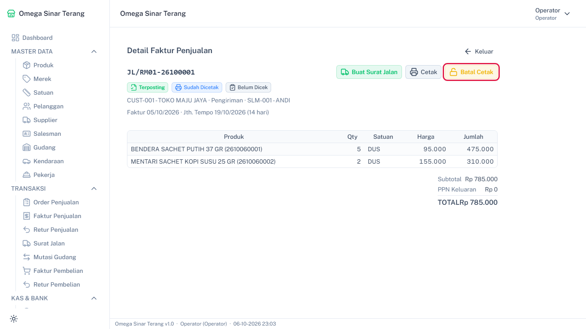
Status kirim: Menunggu Kirim (awal) · Terkirim · Belum Terkirim · Dibawa Balik.
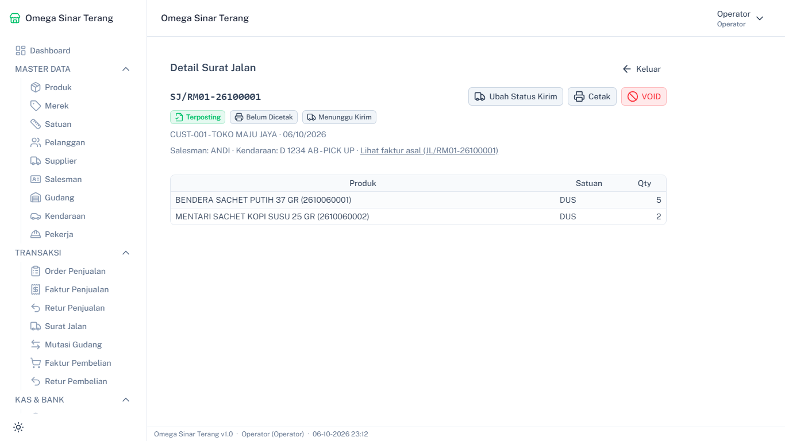
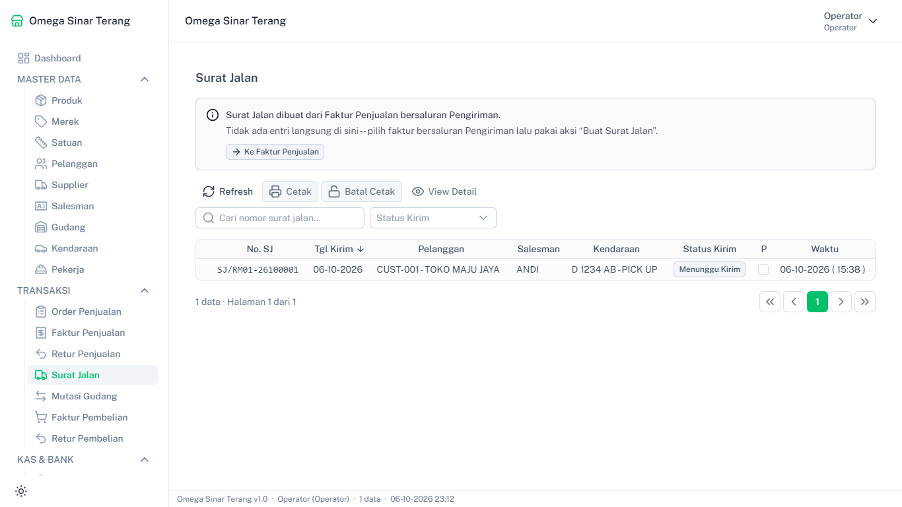
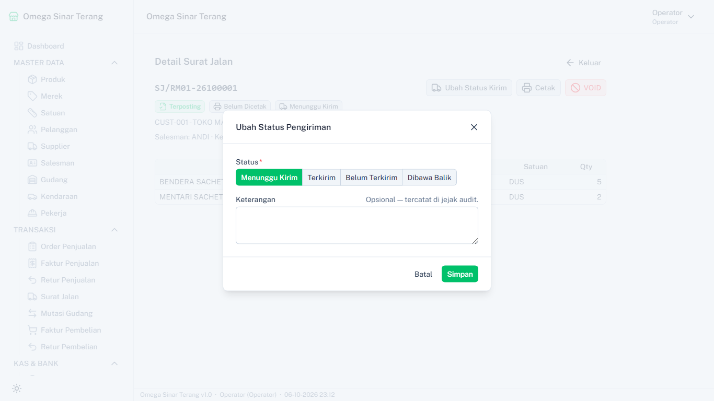
Tujuan: membuat faktur untuk pembeli yang langsung membawa barang. Tidak perlu Order dan Surat Jalan.
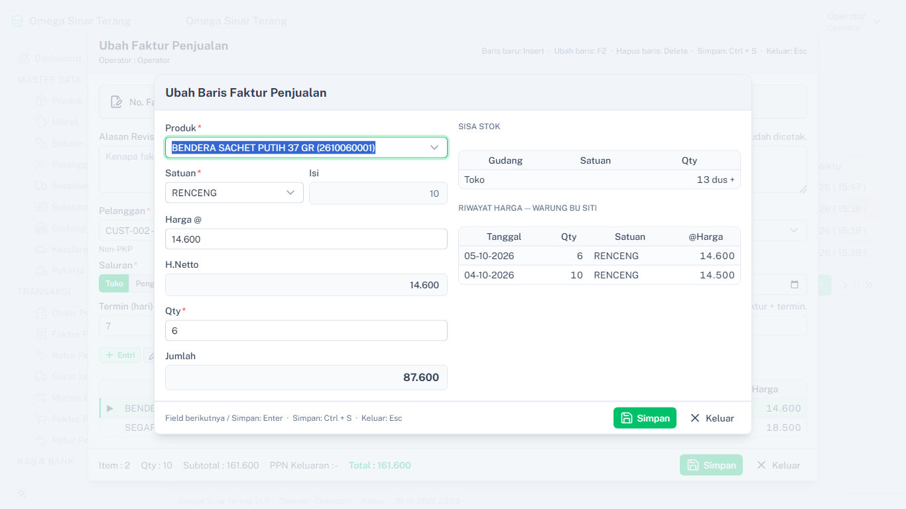
Tujuan: mencatat faktur pembelian sehingga stok bertambah dan hutang ke supplier tercatat.
| Kotak | Isi dengan |
|---|---|
| Tgl Terima Barang | Tanggal barang benar-benar masuk gudang. Menentukan urutan barang mana yang dianggap keluar lebih dulu. |
| Tgl Faktur Supplier | Tanggal yang tertulis di nota supplier. Dasar hitung jatuh tempo dan tarif PPN. |
| Termin (hari) | Lama tempo bayar; Jatuh Tempo = Tgl Faktur Supplier + termin, terhitung otomatis. |
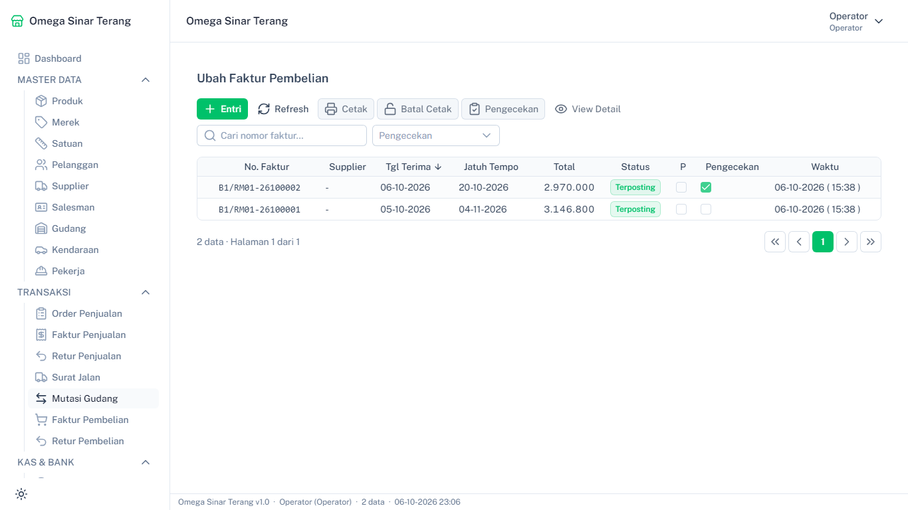
Jendela Faktur Tersimpan menampilkan nomor faktur, total, dan Harga Pokok / Satuan Dasar setiap baris. Klik Lihat Detail atau Keluar. Barang otomatis masuk ke gudang Toko.
Halaman detail faktur pembelian (pilih faktur → View Detail) memperlihatkan baris, Subtotal, Diskon Faktur, PPN Masukan, TOTAL, serta tombol Cetak, Ubah, VOID.
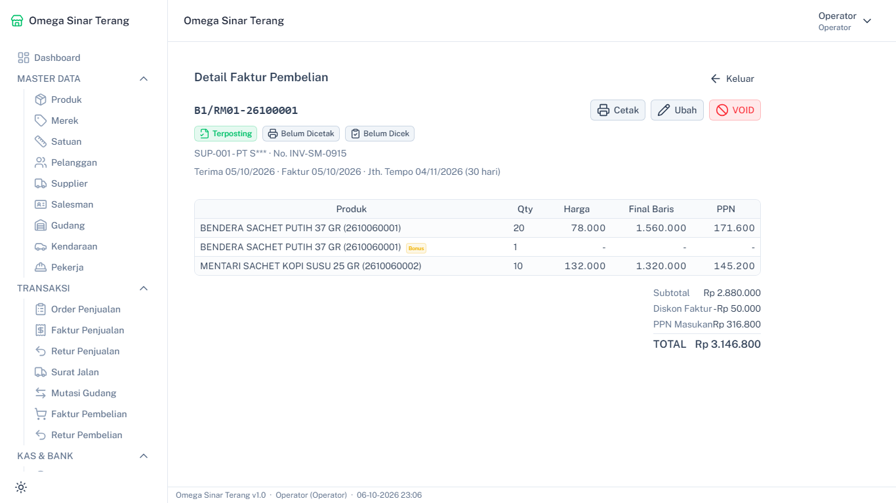
Mencetak nota pembelian: di detail faktur klik Cetak → halaman pratinjau nota terbuka → klik Cetak. Nota A5 memuat tiga kolom tanda tangan: Dibuat Oleh, Diterima Oleh, Diketahui Oleh. Setelah dicetak, faktur terkunci seperti dokumen lain.
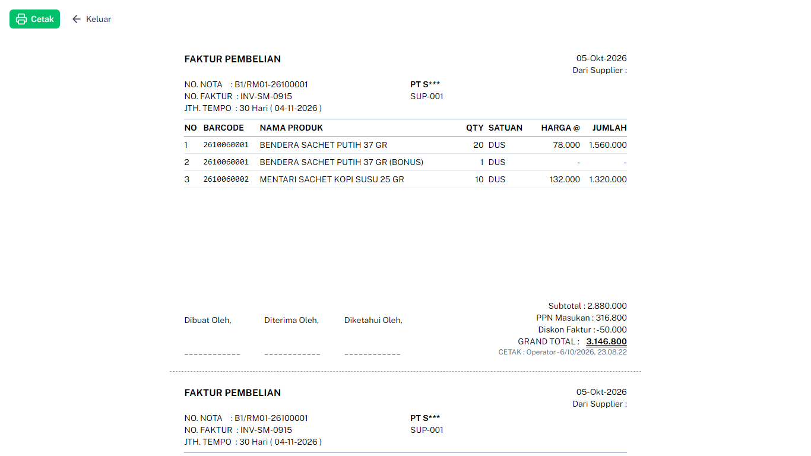
VOID faktur pembelian oleh Operator butuh persetujuan Supervisor, sama seperti faktur penjualan.
Tujuan: mencatat uang masuk dari pelanggan (Penerimaan Kas) atau uang keluar ke supplier (Pengeluaran Kas). Keduanya bekerja dengan cara yang sama.
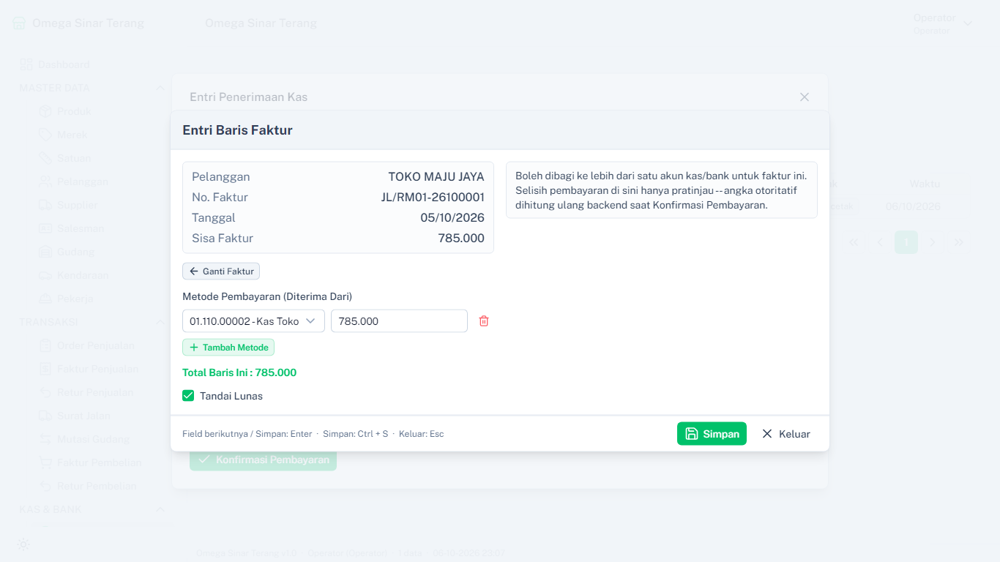
Halaman detail pembayaran terbuka (nomor PAY/…), berisi Metode Pembayaran dan Faktur Dilunasi. Dari sana Anda bisa Cetak kwitansi.
Selisih hanya dicatat kalau Anda mencentang Tandai Lunas dan nominal tidak persis sama dengan sisa faktur. Contoh dari klien: sisa faktur Rp 33.253.125, pelanggan membayar Rp 33.253.000. Centang Tandai Lunas; selisih Rp 125 (kurang bayar) dicatat otomatis dan faktur dianggap lunas.
Arah sebaliknya (Barang Rusak → Toko, barang ternyata masih layak jual) butuh persetujuan Supervisor. Layar menampilkan peringatan Butuh persetujuan Supervisor, dan jendela Menunggu Persetujuan muncul saat Simpan.
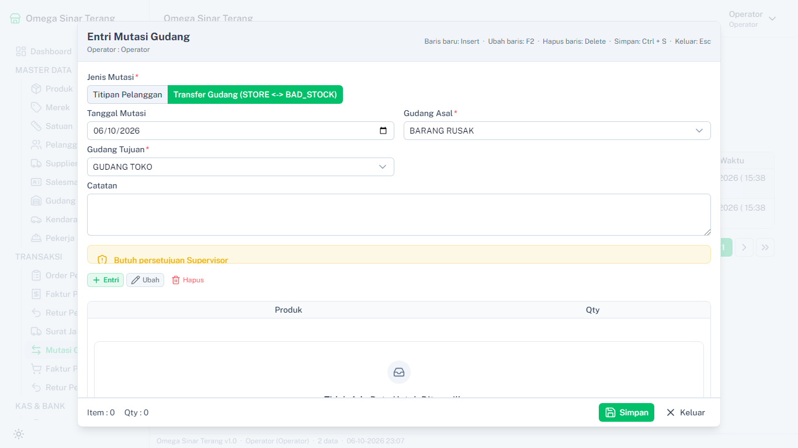
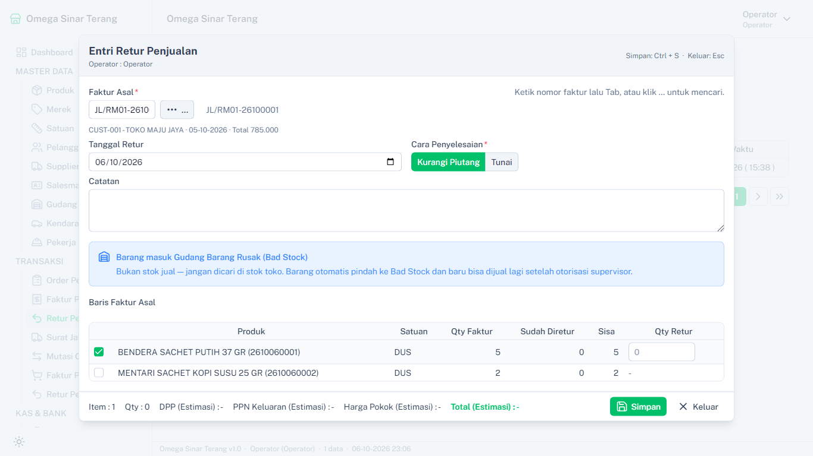
Detail retur (daftar → View Detail) punya tombol Cetak, Ubah, dan VOID, dengan aturan kunci cetak yang sama seperti faktur (Bab 3.3, 3.5):
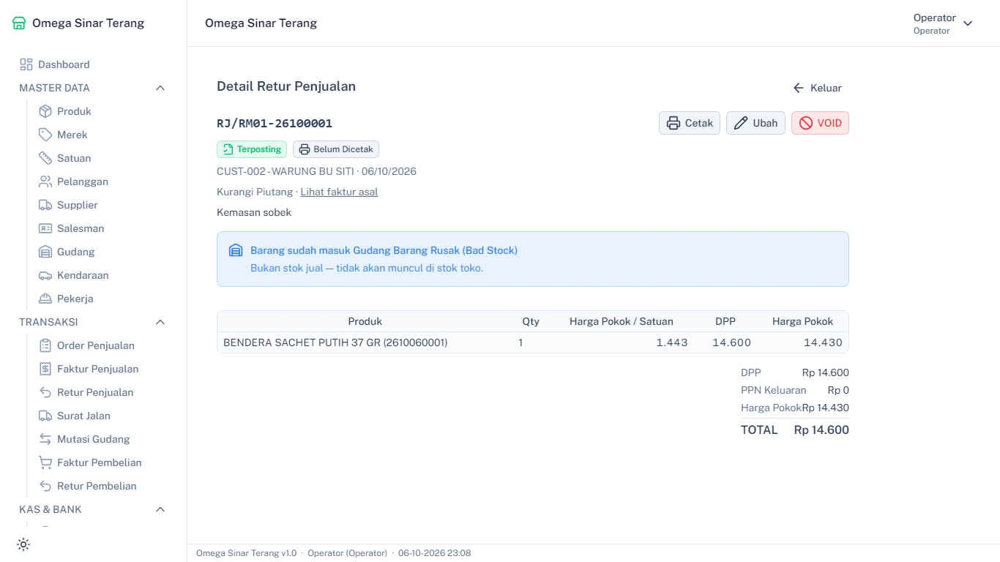
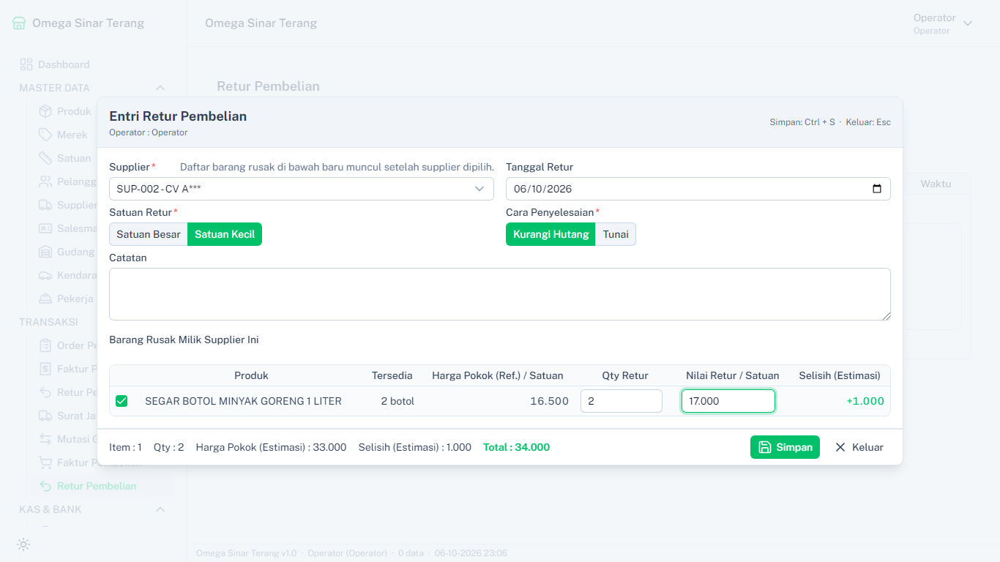
Nilai retur boleh berbeda dari harga pokok. Prinsip toko: ambil nilai yang paling menguntungkan. Kolom Harga Pokok (Ref.) adalah pembanding; Selisih (Estimasi) hijau (+) berarti toko untung dari negosiasi, merah (−) berarti rugi. Keduanya dicatat otomatis.
Tukar barang dicatat sebagai dua dokumen: (1) Retur Pembelian untuk barang yang dikembalikan, lalu (2) Faktur Pembelian baru untuk barang pengganti. Pilih Kurangi Hutang di retur sehingga hutang keduanya saling menutup.
Barang titipan di toko ini artinya: pelanggan sudah membeli dan membayar, tetapi belum mengambil barangnya. Barang itu sudah bukan milik toko. (Ini bukan konsinyasi.)
dus (isi 60)). Kurangi atau ganti satuan bila hanya sebagian yang dititip. Klik Simpan, lalu Simpan dokumen.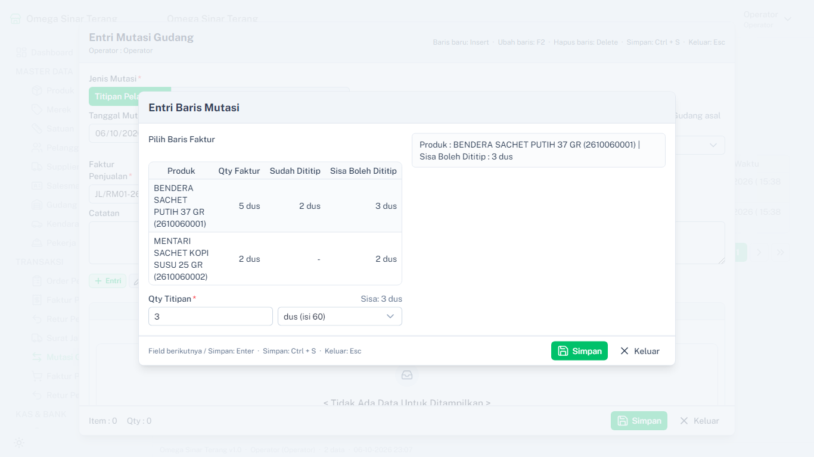
Tujuan: mencatat pengeluaran Kas Kecil (BBM, upah angkut, ongkos kirim, dll.) dan kasbon karyawan.
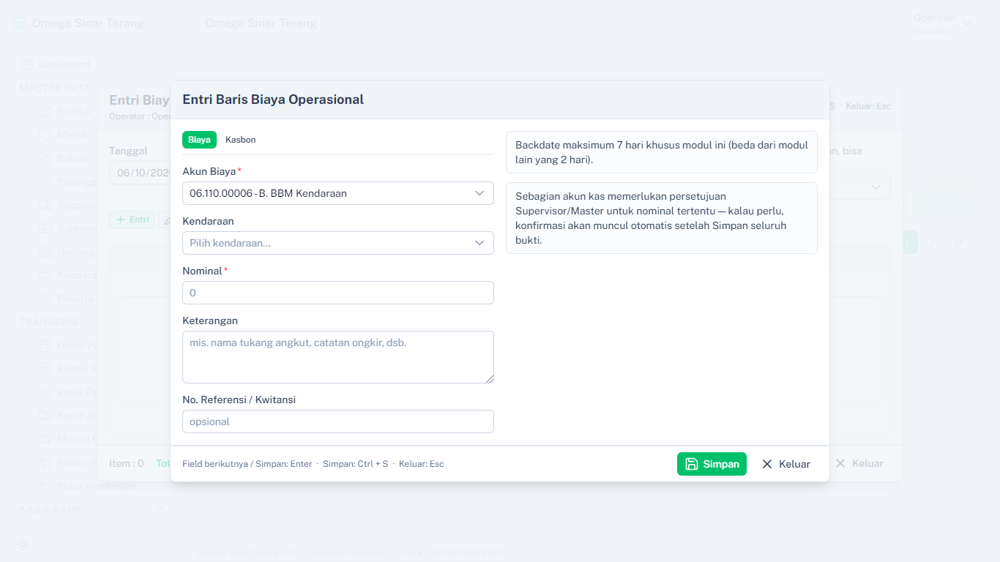
KK/…). Baris yang Anda simpan di hari yang sama otomatis bergabung ke bukti hari itu.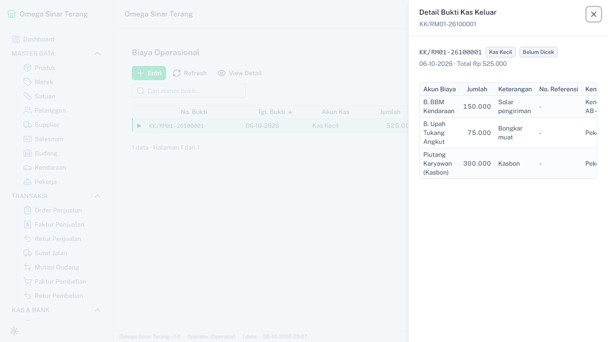
Tujuan: mencatat karyawan yang menyetor tunai untuk melunasi kasbonnya.
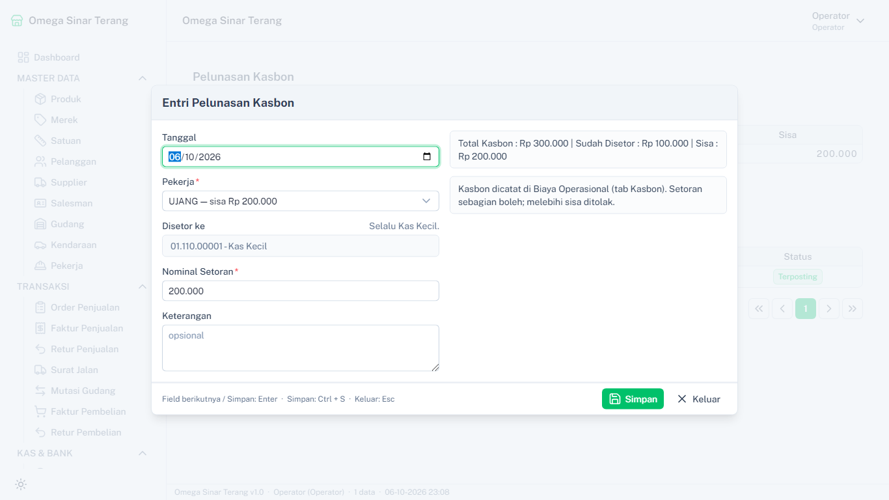
PK/…. Kalau salah: pilih bukti → VOID (Operator butuh persetujuan); sisa kasbon pekerja bertambah lagi.Tujuan: memindahkan uang antar kas/bank milik sendiri (isi ulang Kas Kecil, setoran Kas Toko ke Kas Besar).
PB/… tersimpan. dengan tombol Cetak. Bukti juga bisa dicetak nanti: klik dokumen di daftar → panel Detail Pindah Buku Kas → Cetak.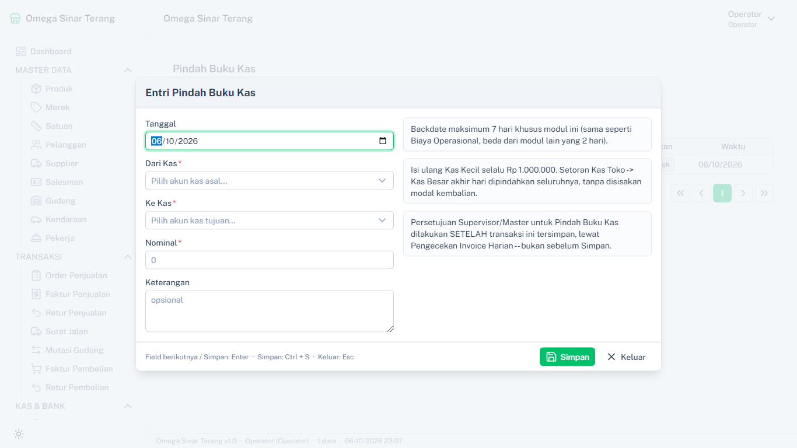
| Keadaan | Yang dilakukan |
|---|---|
| Belum disimpan | Perbaiki langsung di jendela entri, atau tutup dan buang. |
| Sudah disimpan, belum dicetak, masih dalam 2 hari | Detail faktur → Ubah → perbaiki → Simpan. Nomor tetap, muncul “Revisi N”. Bisa juga VOID lalu buat ulang (Operator: VOID butuh persetujuan). |
| Sudah dicetak, masih dalam 2 hari | Detail → Batal Cetak → pilih Diperbaiki (atau Dibatalkan/VOID) → isi Alasan → Lanjutkan. Layar Ubah (atau VOID) terbuka; simpan → tunggu persetujuan. Setelah tersimpan, cetak ulang nota; nota hasil revisi mencantumkan nomor revisinya. |
| Sudah lewat 2 hari | Tidak bisa direvisi. VOID faktur lama (lewat Batal Cetak → Dibatalkan/VOID bila sudah dicetak), lalu buat faktur baru. Barang yang sudah kembali → gunakan Retur. |
| Ditandai Bermasalah oleh Supervisor | Baris faktur berwarna merah di daftar. Buka detail: kotak merah Ditandai bermasalah oleh supervisor berisi catatannya. Perbaiki sesuai catatan dengan salah satu cara di atas, lalu beri tahu Supervisor untuk dicek ulang. |
| Faktur penjualan sudah punya Surat Jalan atau Retur | Tidak bisa direvisi; gunakan VOID + faktur baru. |
| Retur penjualan/pembelian salah | Sama seperti faktur: detail retur → Ubah (dalam batas 2 hari) atau VOID lalu buat retur baru. |
| Order Penjualan tidak jadi | Detail order → Batalkan SO + alasan. |
| Faktur pembelian yang barangnya sudah terjual sebagian | Tidak bisa direvisi; buat Retur Pembelian (tombol Buat Retur Pembelian muncul di pesan kesalahan). |
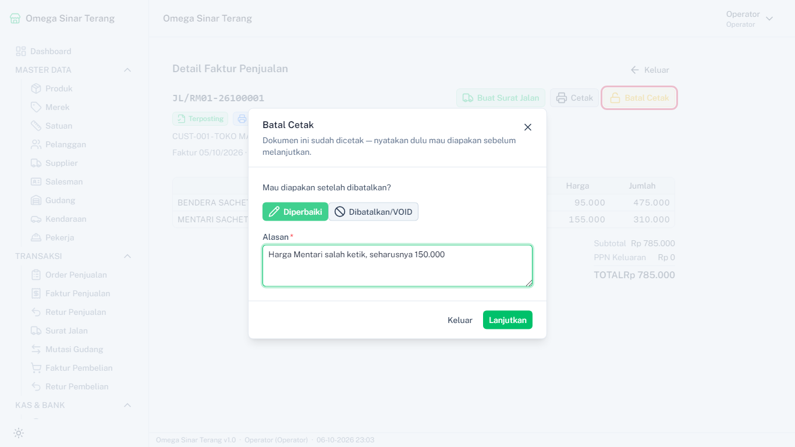
SALAH_INPUT) dan Catatan Alasan (penjelasan).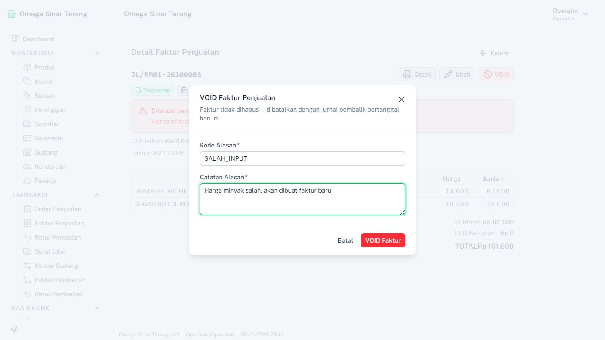
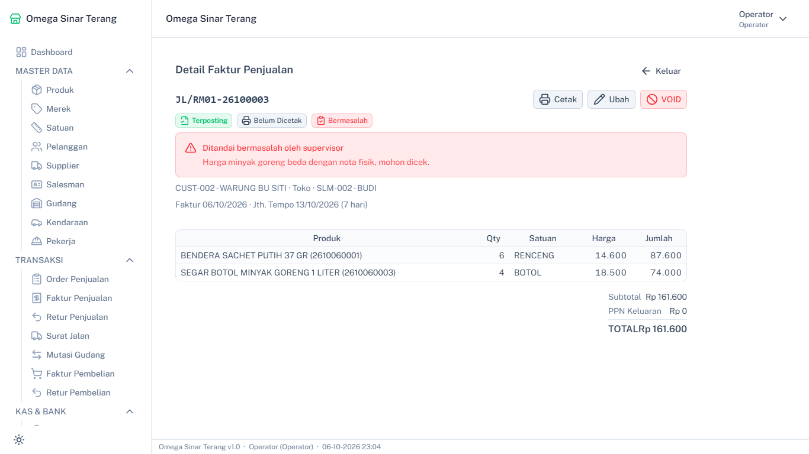
Menu Supervisor hanya tiga: Pengecekan Invoice, Antrian Persetujuan, dan Laporan. Supervisor tidak pernah mengubah faktur; kalau ada yang salah, tandai Bermasalah dan minta Operator memperbaikinya.
Tujuan: memastikan setiap faktur dan bukti kas hari ini sesuai dengan nota fisik.
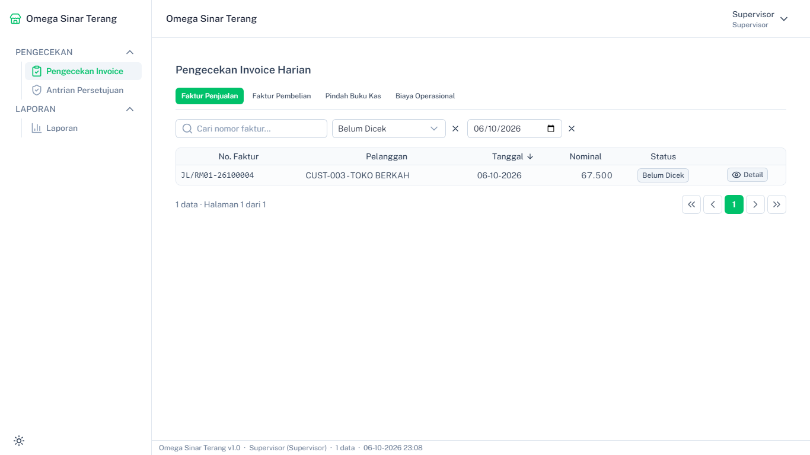
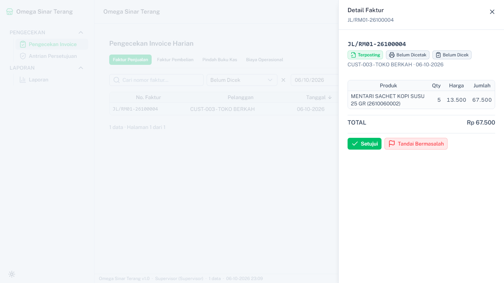
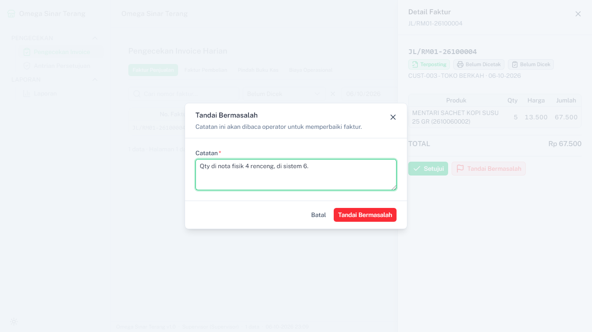
Pengecekan bersifat setelah kejadian dan tidak pernah menghalangi Operator mencetak nota. Biaya Operasional yang sudah Disetujui tidak bisa lagi diubah langsung oleh Operator (harus VOID + baris baru).
Tujuan: menyetujui atau menolak permintaan Operator secepatnya — Operator sedang menunggu di layar.
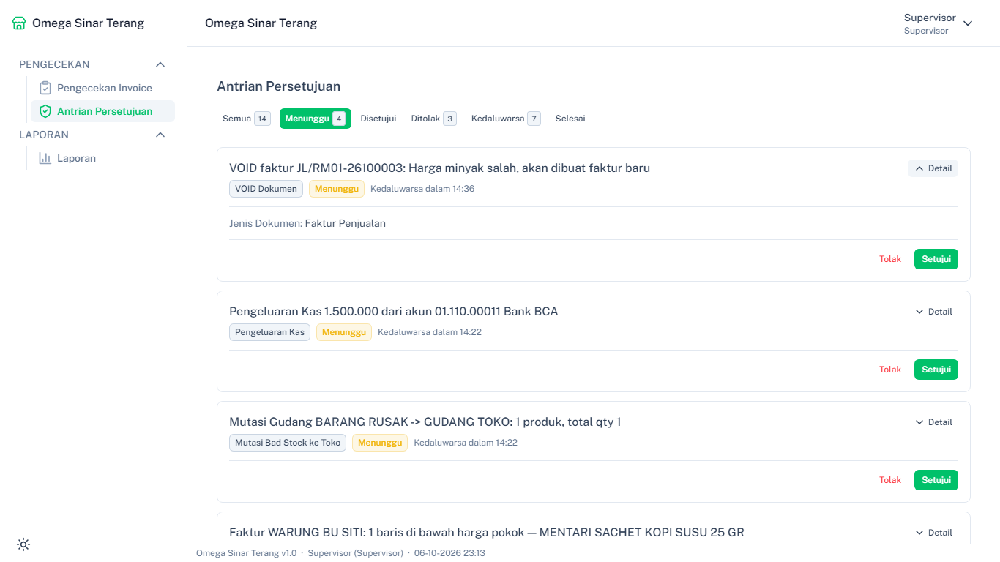
Tab lain: Semua, Disetujui, Ditolak, Kedaluwarsa (lewat 15 menit tanpa jawaban), Selesai (sudah dipakai Operator). Kartu yang tidak bisa diproses lagi tampil pudar.
| Jenis | Setujui bila… | Tolak bila… |
|---|---|---|
| Jual di Bawah Harga Pokok | Harga murah memang disengaja (promo, barang mendekati kedaluwarsa, pelanggan khusus). | Kemungkinan salah ketik harga atau salah satuan. |
| VOID Dokumen | Alasan jelas dan dokumen memang harus batal (akan dibuat ulang). | Alasan kabur; kesalahan masih bisa direvisi. |
| Batal Cetak | Ada kesalahan nyata di nota yang sudah keluar, dan nota lama sudah/akan ditarik. | Hanya ingin cetak ulang (cetak ulang tidak butuh izin). |
| Pengeluaran Kas | Nominal dan tujuan pembayaran sesuai tagihan supplier. | Nominal/akun tidak sesuai; minta Operator memeriksa ulang. |
| Mutasi Bad Stock ke Toko | Barang sudah Anda periksa sendiri dan layak dijual. | Barang belum diperiksa atau memang rusak. |
Bab ini untuk pemilik/administrator. Master juga bisa memakai seluruh menu Operator dan Supervisor.
Pencatatan akuntansi berjalan otomatis dari setiap transaksi. Menu AKUNTANSI dipakai untuk melihat, bukan untuk mengetik transaksi harian.
Daftar seluruh akun (kas, bank, piutang, persediaan, pendapatan, biaya, dll.) dalam bentuk pohon, dengan kolom Kode, Nama, Tipe, Kelompok Laporan, Saldo Normal, Saldo. Gunakan Expand semua / Collapse semua dan kotak Cari kode/nama akun.... Master bisa menambah akun (Entri) atau mengubah akun terpilih (Ubah), misalnya menambah rekening bank baru (nyalakan Akun Kas/Bank) atau menyalakan Wajib Otorisasi Supervisor untuk Pengeluaran Besar pada akun kas.
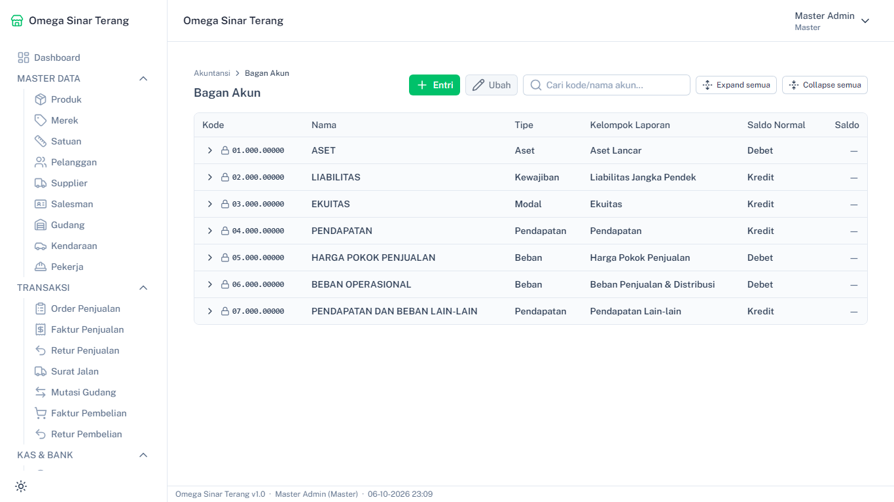
Daftar catatan pembukuan yang dibuat otomatis oleh setiap transaksi (hanya baca). Saring dengan tanggal atau akun; klik baris untuk melihat rinciannya. Lencana Pembalik menandai catatan pembatalan dari VOID. Menu ini hanya untuk Master (Supervisor bisa membukanya lewat alamat langsung; Operator tidak).
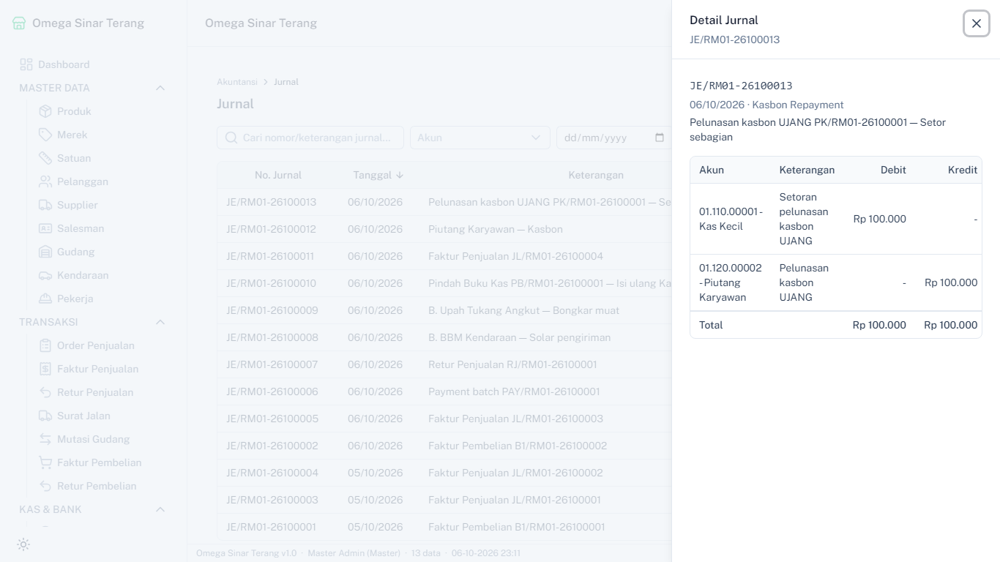
Untuk memasukkan posisi awal saat mulai memakai aplikasi (bertanggal 1 September 2026). Ada dua cara:
A. Ketik langsung di tiga tabel, klik Tambah baris untuk baris berikutnya, lalu Simpan:
| Tabel | Kolom |
|---|---|
| Saldo Awal Stok | Produk, Qty, Satuan (otomatis satuan terbesar), Harga Pokok / Satuan — harga per satuan yang dipilih. Gudang selalu Toko. |
| Saldo Awal Piutang | Pelanggan, Nominal (sisa piutang), Keterangan. |
| Saldo Awal Hutang | Supplier, Nominal (sisa hutang), Keterangan. |
B. Impor dari Excel: klik Unduh Template, isi sheet Stok / Piutang / Hutang, lalu Unggah File Excel. Aplikasi menampilkan pratinjau dulu; baris yang bermasalah ditandai (sheet, baris, masalah) dan posting dikunci sampai file diperbaiki. Bila pratinjau benar, klik Posting Saldo Awal dari File; atau Batalkan Pratinjau.
Kotak di atas menunjukkan apakah nilai stok pembuka sudah seimbang dengan saldo akun persediaan (Saldo awal seimbang).
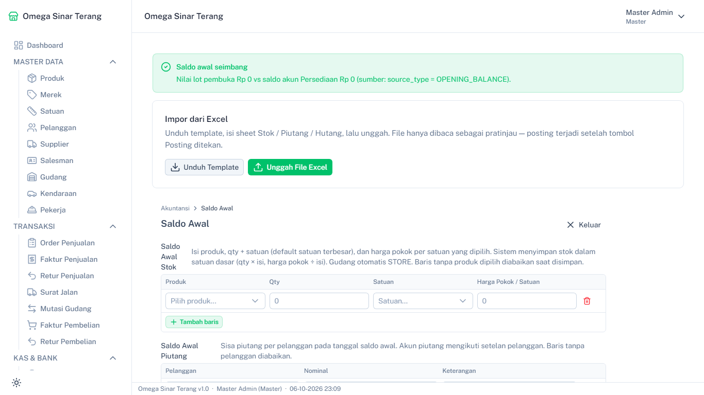
Ubah nilai, lalu klik Simpan Perubahan.
| Pengaturan | Keterangan |
|---|---|
| Kode Toko | Bagian nomor dokumen (RM01). Terkunci setelah dokumen pertama terbit. |
| Nama Toko, Kota, Telepon | Tercetak di kepala nota; yang kosong tidak dicetak. |
| Perusahaan Berstatus PKP | Saat ini mati: PPN keluaran selalu Rp 0 dan PPN masukan dari supplier PKP ikut menjadi harga pokok. Bila dinyalakan, PPN keluaran dihitung di semua nota penjualan, tidak peduli pelanggannya PKP atau bukan. Jangan dinyalakan tanpa berkonsultasi dengan konsultan pajak dan developer. |
| Mode Perhitungan Pajak | Apakah harga yang diketik sudah/belum termasuk PPN. Baru berpengaruh bila toko PKP. |
| Maksimum Mundur Tanggal Transaksi | Batas hari tanggal transaksi boleh mundur (standar 2). Juga menjadi jendela revisi faktur. |
| Lebar Bucket Umur Piutang/Hutang | Jumlah hari per kolom umur di laporan piutang/hutang (30 → kolom 1-30, 31-60, 61-90, >90). |
| Ambang Persetujuan Pengeluaran Kas | Pengeluaran dari akun kas yang ditandai “butuh persetujuan” (Kas Besar, bank) di atas nominal ini wajib disetujui Supervisor/Master. Rp 0 = setiap pengeluaran dari akun itu butuh persetujuan. |
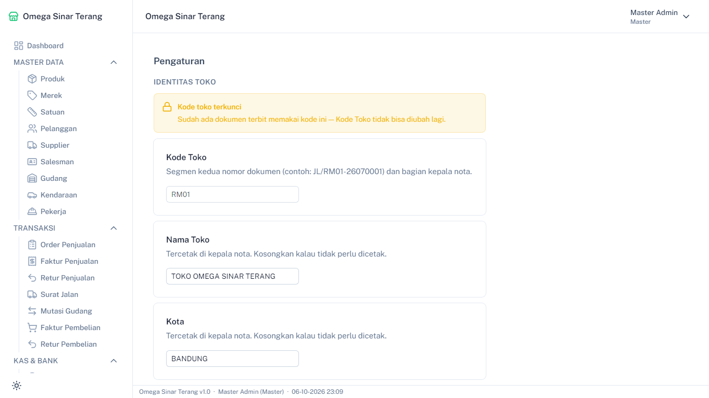
Menu Pengaturan → Pengguna (khusus Master) untuk mengatur akun login.
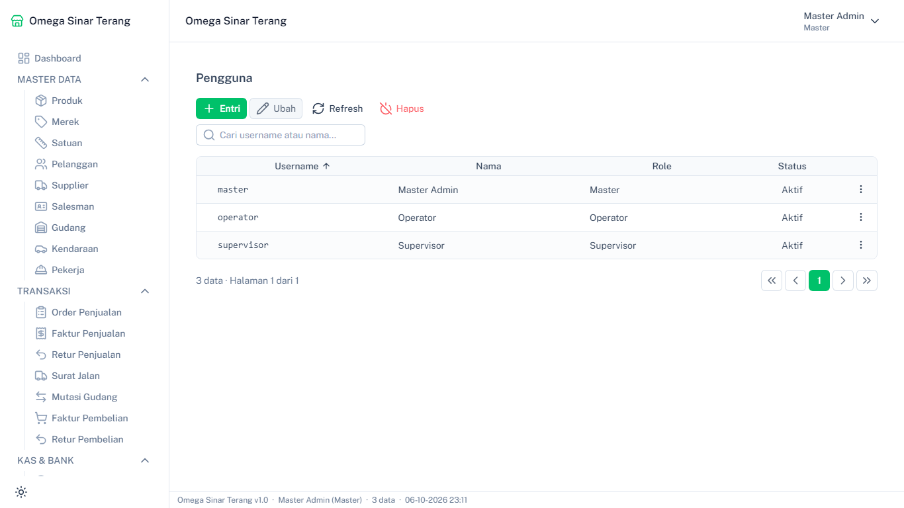
Master melihat semua laporan (Bab 8). Yang paling sering dipakai pemilik: Laporan Penjualan, Laporan Piutang, Laporan Hutang, Rekap Kas Harian, dan Laporan Biaya Operasional. Gunakan Kontinuitas Nomor Dokumen dan Rekonsiliasi Stok untuk pemeriksaan berkala.
Buka menu Laporan, lalu klik kartu laporan yang diinginkan. Hampir semua laporan punya tombol Excel dan PDF di kanan atas untuk mengunduh. Baris yang menunjuk dokumen (misalnya faktur) bisa diklik untuk membuka dokumen sumbernya. Baris GRAND TOTAL tercetak tebal di bawah.
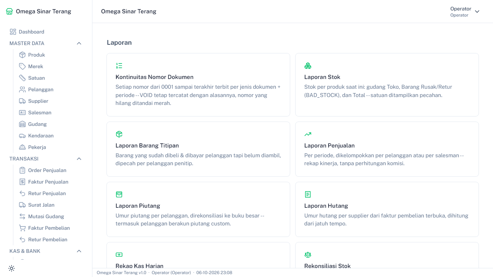
Gunanya: membuktikan tidak ada nomor dokumen yang hilang. Cara: pilih Jenis Dokumen dan Periode (bulan). Cara membaca: setiap nomor dari 0001 tampil dengan Status: Terposting, Dibatalkan (latar kuning, alasan VOID tampil di Keterangan), atau HILANG (latar merah — seharusnya tidak pernah terjadi; laporkan ke developer). Di atas tabel tertulis Nomor terakhir dan jumlah Lubang.
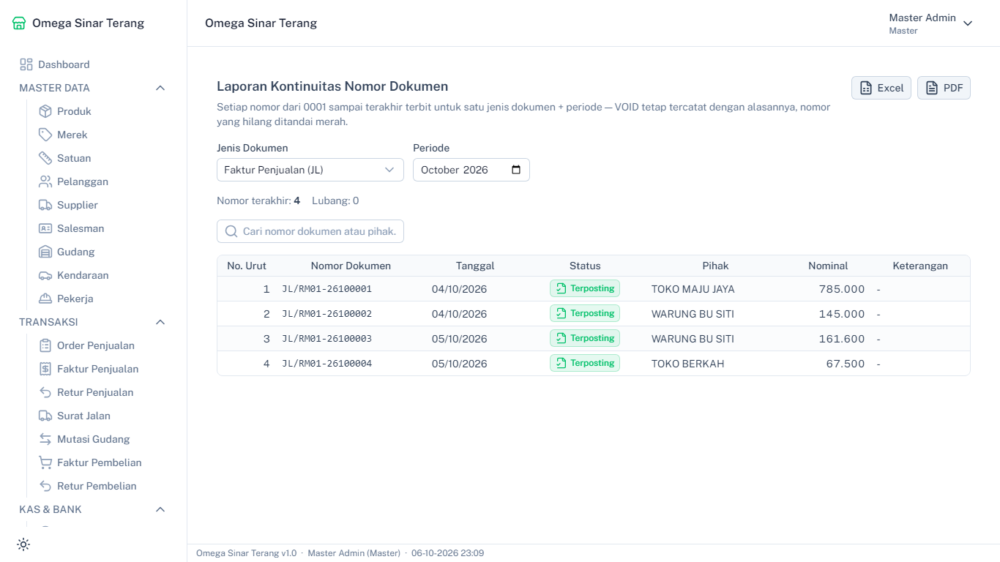
Gunanya: stok saat ini per produk. Cara membaca: kolom Stok Toko, Stok BS (Barang Rusak), dan Total, dalam pecahan satuan (mis. “12 dus 5 renceng”). Angka minus berarti faktur pembelian belum dimasukkan.
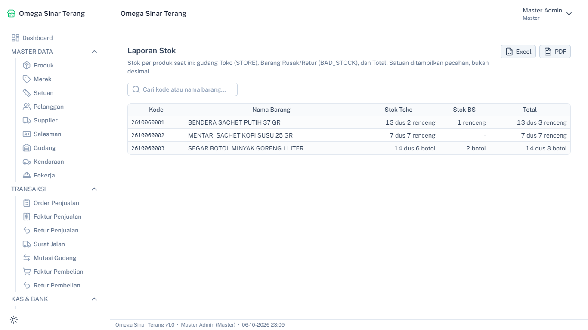
Gunanya: barang yang sudah dibayar pelanggan tetapi belum diambil, per pelanggan per faktur. Ketik nama pelanggan, nomor faktur, atau nama barang di kotak Cari.
Operator tidak bisa membuka laporan ini, supaya hitungan fisik tidak terpengaruh angka sistem.
Gunanya: menghitung stok fisik gudang Toko dan — setelah disetujui Master — mengoreksi stok sistem.
OP/… berstatus Draft — stok belum berubah.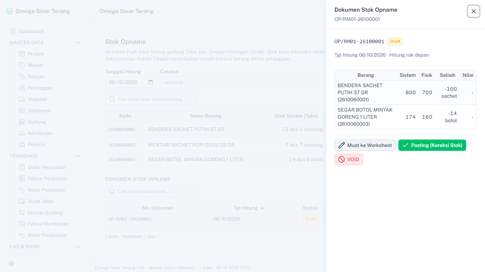
Supervisor bisa menyimpan hitungan, tetapi Posting dan VOID hanya oleh Master. VOID draft cukup membatalkannya; VOID dokumen terposting membalik koreksi stok dengan tanggal hari ini.
Gunanya: total penjualan per periode. Cara: pilih Dasar Pengelompokan — Per Pelanggan, Per Salesman, atau Detail per Faktur — lalu isi Dari dan Sampai. Saringan Salesman hanya aktif pada Detail per Faktur. Cara membaca: mode rekap menampilkan Jml Faktur dan Total; mode detail menampilkan setiap faktur, klik baris untuk membuka fakturnya. Tidak ada perhitungan komisi.
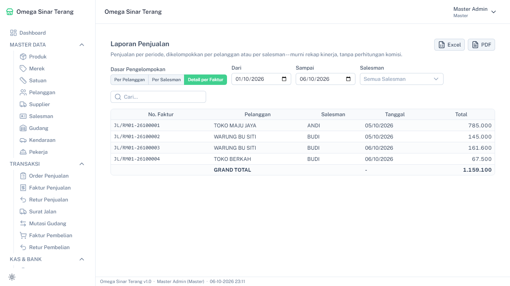
Gunanya: siapa yang masih berutang ke toko dan sudah berapa lama. Cara membaca: satu baris per pelanggan dengan kolom umur (1-30, 31-60, 61-90, >90 hari) dan Total. Klik baris pelanggan → bagian Rincian Piutang muncul di bawah; klik baris rincian untuk membuka fakturnya.
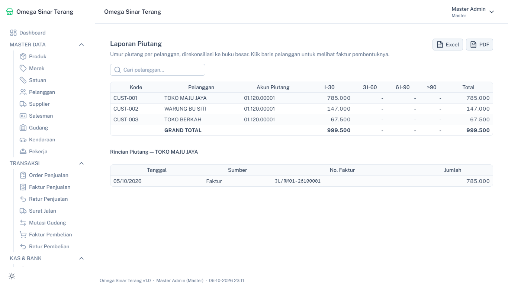
Gunanya: tagihan supplier yang belum dibayar, dikelompokkan menurut umur dari jatuh tempo. Klik baris supplier untuk melihat faktur pembentuknya (No. Faktur, Jatuh Tempo, Sisa Hutang).
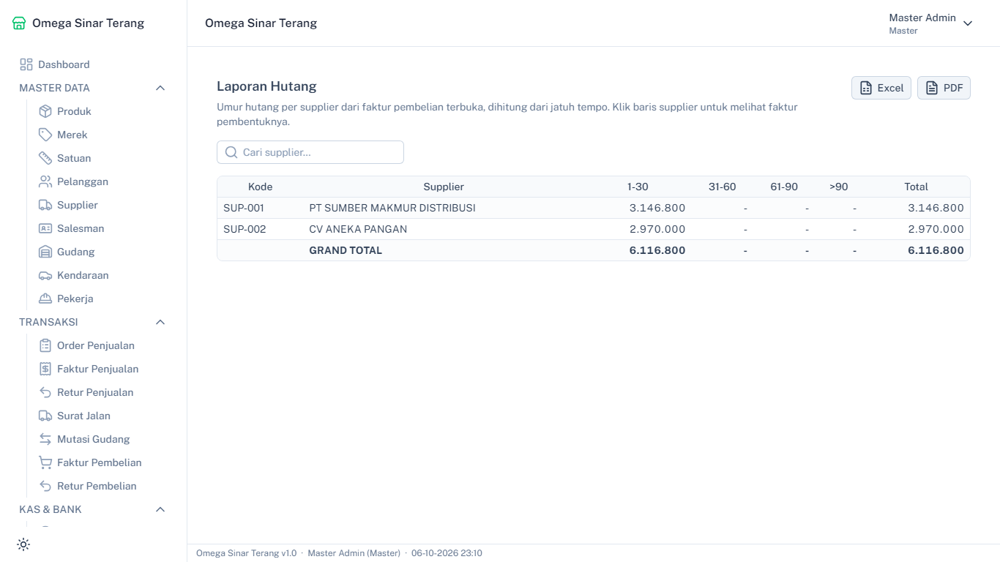
Gunanya: pengganti cash opname — posisi setiap kas/bank pada satu tanggal. Cara: pilih Tanggal dan (opsional) Akun. Cara membaca: Saldo Awal + Masuk − Keluar = Saldo Akhir. Cocokkan Saldo Akhir Kas Toko/Kas Kecil dengan uang fisik di laci.
Gunanya: pemeriksaan kesehatan data stok. Kolom Selisih harus 0 di semua baris. Kalau ada yang tidak 0, jangan diperbaiki sendiri — hubungi developer.
Gunanya: rekap biaya per akun untuk satu Bulan (Nama Biaya, Jumlah, GRAND TOTAL). Kasbon tidak ikut karena bukan biaya. Unduhan hanya Excel.
| Pesan di layar | Artinya & yang harus dilakukan |
|---|---|
| Tanggal transaksi maksimal mundur 2 hari dari hari ini. | Tanggal transaksi terlalu lama. Pakai tanggal yang lebih baru, atau minta Master bila memang perlu. |
| Tanggal transaksi tidak boleh di masa depan. | Tanggal melewati hari ini. Periksa tanggal. |
| Faktur berumur lebih dari 2 hari tidak bisa direvisi. Gunakan VOID lalu terbitkan faktur baru. | Klik Batalkan (VOID), lalu buat faktur baru (lihat 3.5). |
| Faktur ini sudah punya Surat Jalan atau Retur Penjualan yang merujuk baris-barisnya — tidak bisa direvisi. Gunakan VOID lalu terbitkan faktur baru. | Sama: VOID + faktur baru. |
| Barang dari faktur ini sudah terjual sebagian — tidak bisa direvisi. Gunakan Retur Pembelian. | Klik Buat Retur Pembelian. |
| Pilih Sales Order (salesman mengikuti PJ-nya). | Faktur Pengiriman wajib memilih Sales Order. Buat Order Penjualan dulu. |
| Tidak ada Sales Order terbuka untuk pelanggan ini. | Belum ada order untuk pelanggan itu, atau sudah semua dijadikan faktur. |
| Faktur bersaluran TOKO tidak bisa dibuatkan surat jalan — hanya faktur PENGIRIMAN. | Faktur Toko tidak butuh surat jalan. |
| Faktur ini sudah punya surat jalan aktif. | Surat jalannya sudah ada; buka menu Surat Jalan. |
| Pembayaran (Rp …) melebihi sisa faktur (Rp …). Tandai lunas dulu kalau memang ingin menutupnya dengan selisih. | Kurangi nominal, atau centang Tandai Lunas. |
| Kode alasan dan catatan alasan wajib diisi. | Isi kedua kotak di jendela VOID. |
| Alasan wajib diisi untuk membatalkan cetak dokumen yang sudah dicetak. | Isi Alasan Revisi / Alasan. |
| Waktu persetujuan habis (15 menit). Ulangi aksinya dari awal. | Supervisor tidak menjawab dalam 15 menit. Simpan ulang dan hubungi Supervisor. |
| Ditolak: … / Permintaan ditolak Supervisor/Master. | Baca alasan, perbaiki, ulangi. |
| Masih ada permintaan persetujuan lain yang berjalan — selesaikan dulu. | Tunggu/batalkan permintaan yang sedang terbuka. |
| Persetujuan dibatalkan — faktur belum dibatalkan. | Anda menekan Batalkan saat menunggu. Ulangi bila masih perlu. |
| Bukti sudah disetujui supervisor — gunakan VOID untuk koreksi. | Biaya operasional yang sudah disetujui: VOID baris lalu entri baris baru. |
| Bukti Kas Keluar tanggal … sudah dibuat dengan akun kas berbeda — pilih akun kas yang sama untuk baris tambahan hari ini. | Pakai akun kas yang sama dengan bukti hari itu (biasanya Kas Kecil). |
| Akun … hanya boleh dipilih MASTER. | Mis. Gaji Salesman — serahkan ke Master. |
| Qty titipan melebihi qty pada baris faktur … | Kurangi qty titipan atau periksa satuan yang dipilih (dus vs sachet). |
| Kombinasi gudang tidak valid | Transfer hanya antara gudang Toko dan Barang Rusak, dan gudang asal ≠ tujuan. |
| Barang dari retur ini sudah keluar dari Bad Stock (diretur ke supplier/dipindah) — tidak bisa direvisi. | VOID retur ini lalu buat retur baru, atau biarkan. |
| Faktur asal retur tidak bisa diganti — VOID retur ini lalu buat retur baru atas faktur yang benar. | Ikuti petunjuknya: VOID + retur baru. |
| Sales Order ini sudah dibatalkan, tidak bisa diedit lagi. | Buat Sales Order baru. |
| Kasbon wajib memilih pekerja yang menerima kasbon. | Pilih Pekerja di baris Kasbon. |
| Surat jalan ini sudah VOID, status kirim tidak bisa diubah. | Buat surat jalan baru dari faktur asalnya. |
| Diskon faktur tidak boleh melebihi subtotal. | Periksa nilai Diskon Faktur. |
| Pelanggan ini tidak aktif. | Aktifkan pelanggan di Master Data (⋮ → Aktifkan). |
| Qty melebihi sisa stok (sisa …). Boleh dilanjutkan — stok akan minus. | Hanya peringatan. Boleh disimpan; pastikan pembelian sudah diinput. |
| Gagal memuat data | Koneksi ke server terputus. Klik Coba lagi; bila tetap gagal, periksa komputer server. |
Kenapa tombol Ubah dan VOID tidak ada? Dokumen sudah dicetak. Gunakan Batal Cetak (3.3).
Saya hanya ingin mencetak ulang nota yang hilang. Buka detail → Cetak. Tidak perlu izin.
Faktur saya hilang dari daftar? Periksa saringan aktif (hapus dengan ×) dan kotak Cari. Faktur tidak pernah terhapus.
Harga di Riwayat Harga kosong. Produk belum pernah dijual dengan satuan itu. Coba ganti satuan, atau tanyakan harga ke Master.
Kenapa supplier tampil “PT S***”? Nama supplier sengaja disamarkan untuk Operator. Pilih berdasarkan kode supplier.
Order Penjualan tidak jadi. Detail order → Batalkan SO + alasan.
Lupa password. Master me-reset di Pengaturan → Pengguna → ⋮ → Reset Password.
Hal-hal berikut belum ada layarnya di versi ini. Jangan mencari-cari menunya; hubungi developer:
| Istilah | Arti |
|---|---|
| Barang Rusak (BS / Bad Stock) | Gudang untuk barang rusak dan retur pelanggan. Tidak dijual; bisa diretur ke supplier. |
| Batal Cetak | Permintaan membuka kunci dokumen yang sudah dicetak, dengan niat Diperbaiki atau Dibatalkan/VOID. |
| BKP | Barang Kena Pajak — produk yang dikenai PPN saat dibeli dari supplier PKP. |
| Bonus | Barang gratis dari supplier; dicatat baris tersendiri berharga 0. |
| Draf | Isian yang tersimpan sementara di browser sebelum dokumen disimpan. |
| DUS | Satuan besar yang otomatis terpilih saat memilih produk. |
| Harga Pokok (HPP) | Biaya perolehan barang dari supplier. Dihitung otomatis dari faktur pembelian; dipakai untuk batas jual-rugi. |
| H.Netto | Harga per satuan setelah potongan. Karena diskon penjualan sudah ditiadakan, nilainya sama dengan Harga @. |
| Isi | Jumlah satuan dasar dalam satu satuan yang dipilih (mis. 1 renceng = 10 sachet). |
| Jatuh Tempo | Batas tanggal pembayaran = tanggal faktur + termin. |
| Kasbon | Pinjaman uang karyawan dari Kas Kecil; dicatat di tab Kasbon Biaya Operasional. |
| Kunci cetak | Dokumen yang sudah dicetak tidak bisa diubah/dibatalkan tanpa Batal Cetak yang disetujui. |
| Mundur tanggal (backdate) | Mengisi tanggal transaksi sebelum hari ini; dibatasi 2 hari (7 hari untuk biaya & pindah buku). |
| Pelunasan Kasbon | Setoran tunai karyawan ke Kas Kecil untuk mengurangi sisa kasbonnya (dokumen PK). |
| PJ | Penanggung jawab Order Penjualan (salesman). |
| PKP | Pengusaha Kena Pajak. Toko saat ini belum PKP, jadi PPN keluaran Rp 0. |
| PPN | Pajak Pertambahan Nilai. PPN masukan dari supplier PKP ikut menjadi harga pokok. |
| Piutang / Hutang | Piutang = tagihan toko ke pelanggan. Hutang = tagihan supplier ke toko. |
| Revisi | Memperbaiki faktur dengan nomor tetap; ditandai Revisi N. |
| Saluran | Toko (pembeli datang) atau Pengiriman (diantar; wajib Sales Order dan surat jalan). |
| Satuan dasar | Satuan terkecil produk (sachet, botol). Stok disimpan dalam satuan ini. |
| Selisih pembayaran | Beda kecil antara sisa faktur dan uang yang diterima/dibayar saat faktur ditandai lunas. |
| SO / Sales Order | Order Penjualan — pesanan sebelum faktur. Tidak menahan stok. |
| Stok Opname | Hitung fisik gudang Toko; setelah diposting Master, stok sistem dikoreksi sesuai hitungan (dokumen OP). |
| Surat Jalan (SJ) | Dokumen pengantar barang untuk faktur Pengiriman, tanpa harga. |
| Termin | Lama tempo pembayaran dalam hari, diisi per faktur. |
| Titipan | Barang yang sudah dibeli & dibayar pelanggan tetapi belum diambil. Bukan konsinyasi. |
| VOID | Membatalkan dokumen. Dokumen tidak dihapus; angkanya dibalik dengan catatan bertanggal hari pembatalan. |
— Akhir panduan —